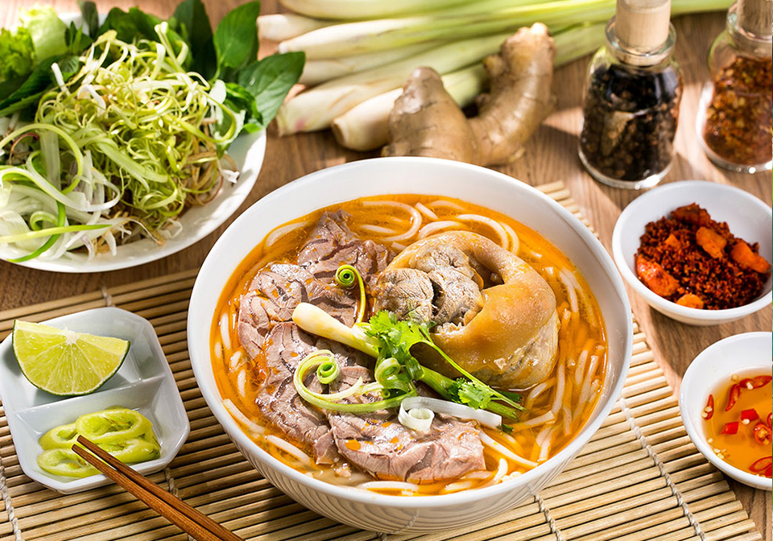

Phở
PREP: 30 minutes COOK: 5 hours and 30 minutes TOTAL: 6 hours
SERVINGS: 8

Description
Phở is a Vietnamese soup dish consisting of broth, rice noodles, herbs and meat,
sometimes chicken. A popular Vietnamese dish in Vietnam where it is served in households,
street stalls and restaurants countrywide, Phở is considered Vietnam's national dish.
Ingredients
You'll Need
- 2 3-inch (7 to 8 cm) pieces ginger, cut in half lengthwise (no need to peel)
- 2 onions (peeled)
- 5 pounds beef marrow or knuckle bones
- 2 pounds beef chuck (cut into 2 pieces)
- 2 scallions (cut into 4-inch lengths)
- 1/3 cup fish sauce
- 2 ½ rock sugar (2 1/2 tablespoons granulated sugar)
- 8 star anise
- 6 cloves
- 1 cinnamon stick
- 1 black cardamom pod (optional)
- 2 teaspoons fennel seeds
- 2 teaspoons coriander seeds
- 1 tablespoon salt
- 1 pound dried pho noodles
- 1/3 pound beef sirloin (slightly frozen, then sliced paper-thin against the grain)
Garnishes
- Sliced chili
- Thinly sliced onion
- Chopped scallions
- Cilantro
- Mung bean sprouts
- Thai basils
- Lime wedges
Instructions
- Place the bones and beef chuck in large stockpot and add water to cover. Bring to a boil and
boil for 5 minutes. Drain in a colander and thoroughly clean the stockpot. This process removes
any impurities/scum and will give you a much cleaner broth.
- Meanwhile, char your ginger and onions. Use tongs to hold the ginger and onions (one at a time)
over an open flame, or place each directly on a gas burner. Turn until they’re lightly blackened
and fragrant, about 5 minutes. Rinse away all the blackened skins.
- Add 5 quarts fresh water back to the stockpot and bring to a boil. Transfer the bones and meat
back to the pot, along with the charred/cleaned ginger and onions. Add the scallions, fish sauce
and sugar. Reduce the heat to low, and simmer until the beef chuck is tender, about 40 minutes.
Skim the surface often to remove any foam and fat.
- Remove one piece of the chuck and transfer to a bowl of ice water to stop the cooking process.
Then transfer this piece of beef to a container and refrigerate (you will slice this to serve
with your pho later. If you were to leave it in the pot, it would be too dry to eat). Leave the
other piece of chuck in the pot to flavor the broth.
- Now toast the spices (star anise, cloves, cinnamon stick, cardamom, fennel seeds, and coriander
seeds) in a dry pan over medium low heat for about 3 minutes, until fragrant. Use kitchen string
to tie up the spices in a piece of cheesecloth, and add it to the broth.
- Cover the pot and continue simmering for another 4 hours. Add the salt and continue to simmer,
skimming as necessary, until you're ready to assemble the rest of the dish. Taste the broth and
adjust seasoning by adding more salt, sugar, and/or fish sauce as needed.
- To serve, boil the noodles according to package instructions. Add to a bowl. Place a few slices
of the beef chuck and the raw sirloin on the noodles. Bring the broth to a rolling boil and ladle
it into each bowl. The hot broth will cook the beef. Garnish with your toppings, and be sure to
squeeze a lot of fresh lime juice over the top!
Source
The Woks of Life
Check out these other awesome Vietnamese dishes:
